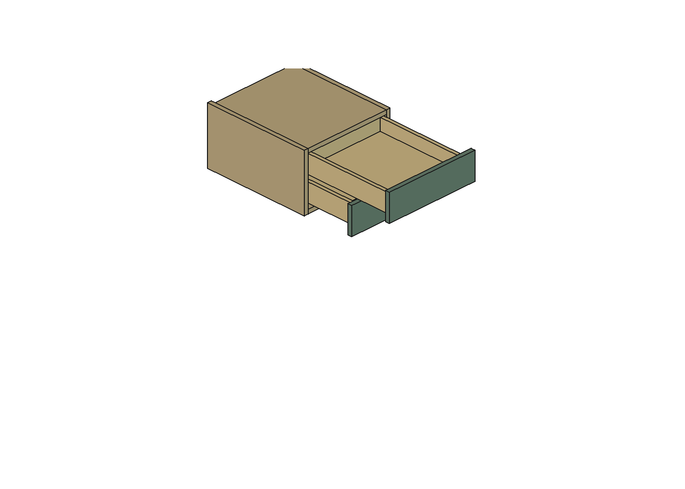

21/10/2026, São Paulo. Escopo: duas gavetas do escritório em conversão candidata para FGVTN 400 mm. A conferência ampliada encontrou uma interferência do conteúdo guardado na proposta R01 e corrigiu a geometria em um novo estudo R02. A R42 principal não foi modificada.
Modelo R02 · Auditoria dos intervalos completos · Cenários de regulagem e comparação com R42 · Reabertura final
| Item | R42 | R02 corrigida |
|---|---|---|
| Carcaça externa | 400 × 450 × 240 mm | 400 × 470 × 248 mm |
| Traseira da carcaça | Y250–268 | Y230–248: 20 mm para trás |
| Base | Z480–498 | Z472–490: 8 mm mais baixa, espessura 18 mm mantida |
| Caixa inferior / superior | Posições originais | Descem 8 / 4 mm, respectivamente |
| Frentes / topo / junta aparente | Junta de 2 mm | Posições e sólidos das frentes preservados; junta 2 mm |
| Profundidade livre da carcaça | 412 mm | 432 mm; margem 12 mm sobre requisito 420 |
| Base interna de cada caixa | 322 × 359 mm | 323 × 369 mm |
| Alturas úteis mantidas como requisito | Inferior 60,4; superior 54 mm | 60,4 / 54 mm nos prismas de conferência |
| Laterais / fundo / parede acima do fundo | 15 / 15 / 53 mm | Preservados |
A alteração externa é explícita: 8 mm adicionais abaixo do módulo e 20 mm atrás. A faixa abaixo da frente inferior passa de 1 para 9 mm. Não há redução das caixas, mas a implantação fica um pouco mais baixa e precisa ser conferida fisicamente para conforto e acabamento.
| Conferência | Cálculo no modelo | Folga mínima |
|---|---|---|
| Objeto inferior passando sob a frente superior alinhada | 601 − (536 + 60,4 + 3) | 1,6 mm |
| Objeto superior passando sob o tampo | 702 − (644 + 54 + 3) | 1 mm |
| Lateral da caixa superior sob o tampo | 702 − (697 + 3) | 2 mm |
| Plano inferior inferido da guia inferior até a base | 494 − 490 | 4 mm, condicionado à interpretação do desenho |
As margens são geométricas nominais. Acabamentos, tolerâncias, empenamento, deflexão e instalação não foram descontados por ausência de especificação. O aumento de 3,1% na área de base conserva os prismas exigidos: inferior 7,199 L e superior 6,436 L, contra referências 6,982 L e 6,242 L. Esses números não são capacidade comercial certificada.
| Verificação | Resultado | Limite |
|---|---|---|
| Cotas e carcaça de origem | Conferidas contra os sólidos carregados da R42; diferença zero nas peças de referência | Não é medição do apartamento |
| Frentes originais | Copiadas integralmente; diferença zero | Fixação na nova caixa pendente |
| Madeira fechada e rasgos | Sem sobreposição entre peças; rasgo proposto de 5 mm, fundo 15 mm | Encaixe ideal sem tolerância de fabricação; resistência do fundo, rasgo e juntas não validada |
| Movimento das duas gavetas e do conteúdo | 154 comparações de volumes varridos, sem colisões: curso contínuo 0–378 mm e regulagem contínua 0–3 mm, com posições independentes das duas gavetas | Frentes mantidas na altura final alinhada; ferragens reais ausentes |
| Método de percurso | União de extrusões de faces das peças ortogonais; envelopes conservadores das frentes | Não depende apenas de amostras espaçadas; não representa folgas mecânicas ou flexão |
| Restante do apartamento | Nenhum sólido externo ao gaveteiro interceptou a caixa delimitadora da união dos percursos, cargas e carcaça, após excluir planos auxiliares e componentes substituídos do escritório | Estado atual dos demais móveis; pessoas e mudanças de posição da cadeira/sofá não incluídas |
| Regulagem com frente solidária | Reprovada para inferior +3 / superior 0: colisão entre frentes | Exige solução real para alinhamento independente |
| Perfis, engates, destrave e retenção | Pendente | Não há modelo dimensional suficiente do conjunto real |
| Recortes, furos, parafusos e fixações | Pendente | Não inventados no CAD |
| Carga e resistência | Pendente | Capacidade anunciada da guia não comprova madeira, juntas, fixações ou móvel instalado |
| Acesso ao fundo | Curso candidato 375 ±3 mm documentado | Menor que os 400 mm da referência; testar alcance e destrave com ferragem real |
| Arquivo e revisão de origem | Estudo separado; R42 com SHA-256 preservado | Não incorporado como montagem aprovada |

Vista de inspeção: inferior a 200 mm e superior a 375 mm. As caixas não estão sustentadas por ferragens nesta representação.
A página oficial consultada ainda remete aos mesmos desenhos Set/2023 e Set/2024. A instrução local não fornece todos os dados acima. Não houve contato externo nem compra.
Estado final: geometria conferida sob as hipóteses declaradas; montagem mecânica pendente.